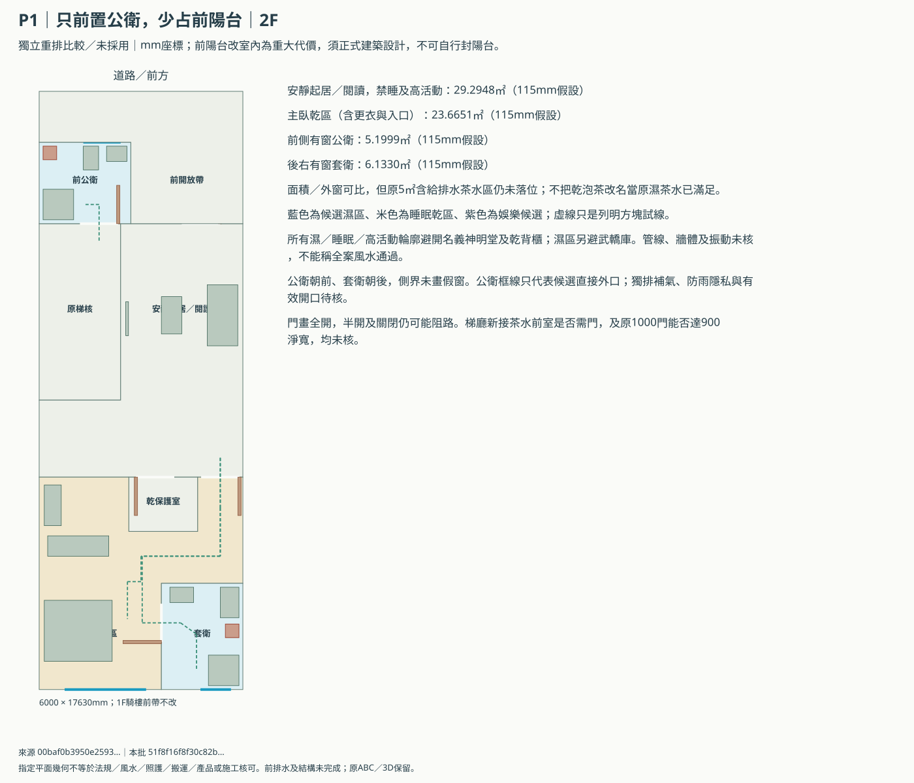
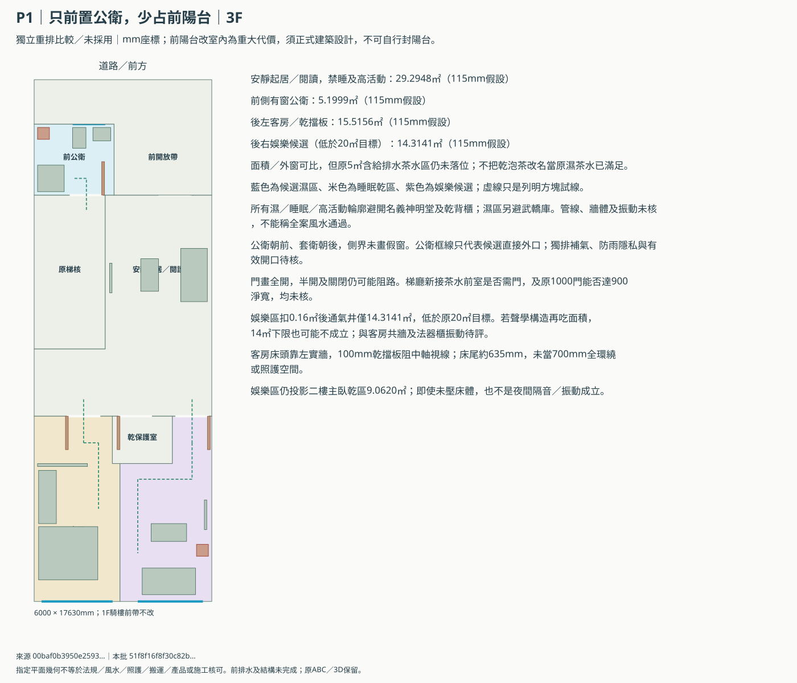
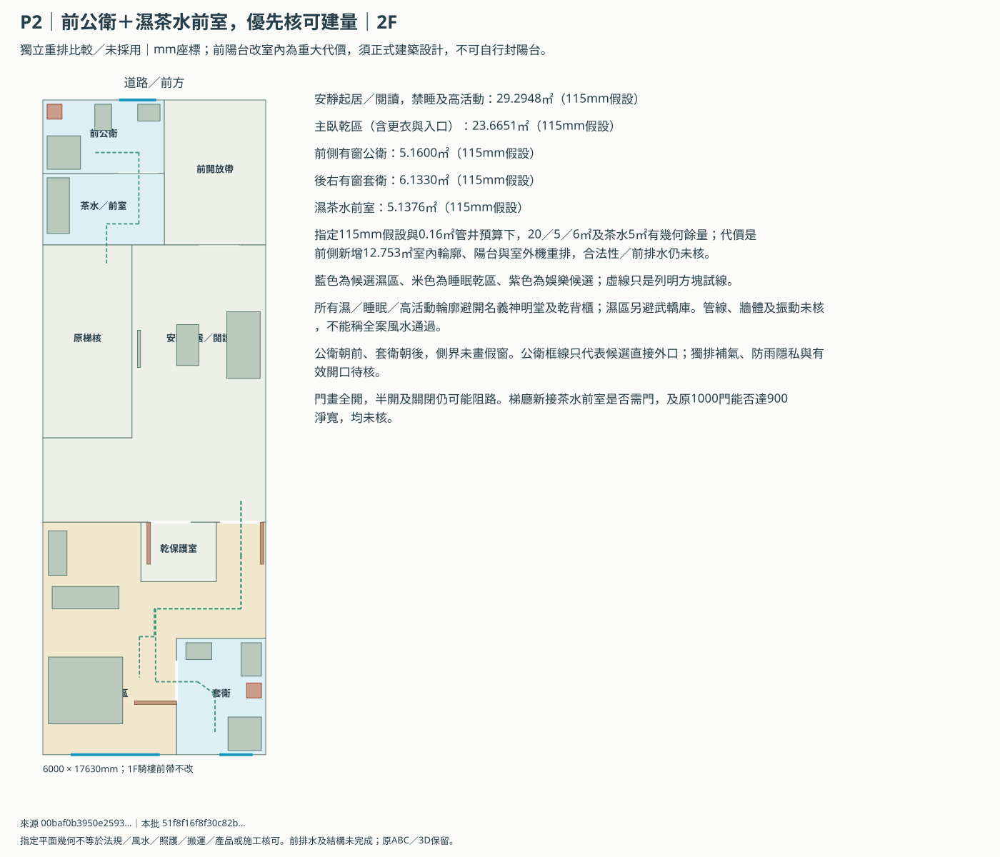
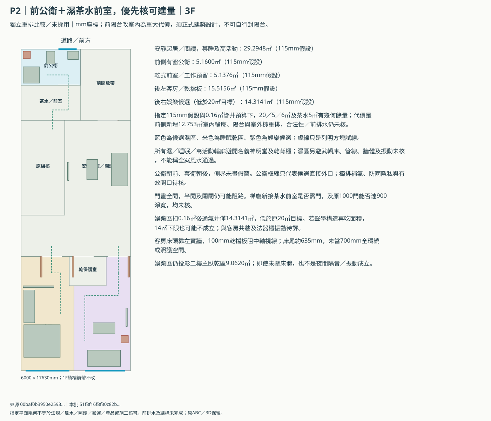
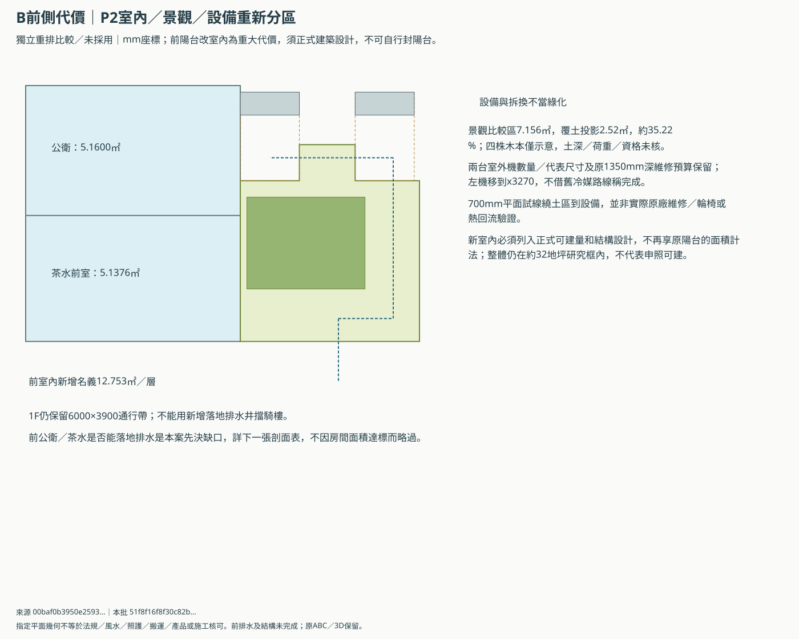
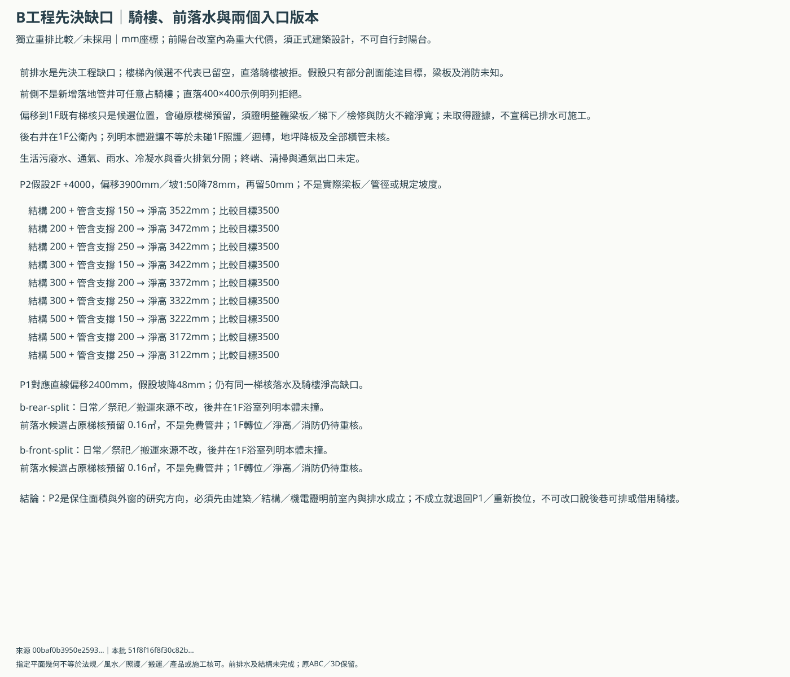

B棟上層整層重排比較
獨立比較／未採用。原ABC、3D、後門預設與前門備案均保留。P2在指定假設下保20／5／6㎡及兩衛外窗方向，但前側新增室內、排水和結構尚未成立，不能當可以直接建造。
原後段固定分配不足，新的方向是把公衛前置，後段改主臥＋後右套衛。不是再將舊房間微移100mm，也不假設側界有窗。
外框6000×17630mm＝105.78㎡，約31.99845地坪。這只核概念外框，所有建蔽、容積、法定空地、騎樓及前室內量體須正式建築設計。
P1｜只前置公衛，少占前陽台
面積／外窗可比，但原5㎡含給排水茶水區仍未落位；不把乾泡茶改名當原濕茶水已滿足。
| 項目 | 比較㎡ | 原目標㎡ | 狀態 |
|---|---|---|---|
| master | 23.6651 | 20 | 僅本假設達標 |
| public-bath | 5.1999 | 5 | 僅本假設達標 |
| private-bath | 6.1330 | 6 | 僅本假設達標 |
| quiet-living | 29.2948 | 28 | 僅本假設達標 |
| tea-foyer | 0.0000 | 5 | 原目標仍缺 |
| garden | 7.9200 | 7 | 僅本假設達標 |
| third-guest | 15.5156 | 12 | 僅本假設達標 |
| third-ktv | 14.3141 | 20 | 原目標仍缺 |




P2｜前公衛＋濕茶水前室，優先核可建量
指定115mm假設與0.16㎡管井預算下，20／5／6㎡及茶水5㎡有幾何餘量；代價是前側新增12.753㎡室內輪廓、陽台與室外機重排，合法性／前排水仍未核。
| 項目 | 比較㎡ | 原目標㎡ | 狀態 |
|---|---|---|---|
| master | 23.6651 | 20 | 僅本假設達標 |
| public-bath | 5.1600 | 5 | 僅本假設達標 |
| private-bath | 6.1330 | 6 | 僅本假設達標 |
| quiet-living | 29.2948 | 28 | 僅本假設達標 |
| tea-foyer | 5.1376 | 5 | 僅本假設達標 |
| garden | 7.1560 | 7 | 僅本假設達標 |
| third-guest | 15.5156 | 12 | 僅本假設達標 |
| third-ktv | 14.3141 | 20 | 原目標仍缺 |




前側室內／景觀與設備代價

不能略過的排水剖面

先解這些，才能談採用
- 前側新室內須在建築師的正式量體／申照中成立，不能把陽台免計面積繼續算給新室內，亦非交屋後自行封陽台。
- 前部新增樓地板／牆及濕區荷重、梁板降板、地震、防火／防水與騎樓梁下淨高須整體核定。
- 側界不畫假窗；朝街及後側外窗都只作合法外口候選，完成開啟面積／防雨／隱私與獨立排氣補氣另核。
- 1F後／前各三態及RF保護範圍保留，這輪不移神桌、不改樓梯本體、不增加占騎樓的構造。
- 3F後右KTV候選雖避名義神明堂／乾背櫃，僅達14㎡下限且低於20㎡目標；與客房、法器櫃的隔音／振動及構造厚度未核，不能當原KTV需求完整解決。
- 整棟新風、冷氣工作點與冷凝水、屋頂通氣及新增室內區的負荷尚未合圖；P2左側室外機改位，原冷媒線不可沿用。
- 指定700／900矩形試線、全開／半開／關閉門片只作幾何篩查；不等於人體運動學、照護、消防或風水核可。